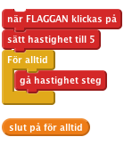
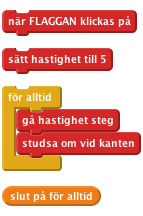
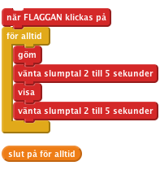
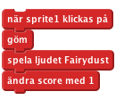
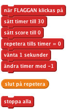

Whack-a-Witch
Nivå 1
Det här projektet är som spelet Whack-a-Mole. Du får poäng för att träffa häxorna som kommer upp på skärmen. Målet är att få så många poäng som möjligt på 30 sekunder!
Nu vill vi göra så att häxan rör sig.

Klicka på den gröna flaggan och se vad häxan gör. Varför fastnar hon vid kanten av skärmen?

Klicka på den gröna flaggan.
Rör sig häxan från sida till sida över skärmen?
Spara ditt projekt {.save}
Försök att ändra värdet för hastighetsvariabeln så att hon kan flyga snabbare eller långsammare.
Hur skulle du göra så att häxan flyger snabbare ju längre tid hon flyger?
(Det här är en klurig en, så oroa dig inte om du inte förtår hur man gör. Du kommer att få mer ledtrådar under tiden du arbetar med projektet.)
För att göra spelet roligare vill vi att häxan ska synas och försvinna slumpvis. Vi gör det med ett annat script som körs samtidigt som det som flyttar häxan. Det nya scriptet behöver gömma häxan en godtycklig tid, sedan visa henne en godtycklig tid, och fortsätta så för alltid (eller tills spelet avslutas).
Skapa ett script för häxan:

Klicka på den gröna flaggan.
Rör sig häxan från sida till sida över skärmen och försvinner och dyker hon upp slumpvis?
Spara ditt projekt {.save}
Försök att ändra intervallet av slumptal. Vad händer om du väljer väldigt höga siffror eller väldigt låga?
(Ger det här dig några ledtrådar för hur man får häxan att öka hastigheten ju längre spelet håller på? )
För att göra detta till ett spel, måste vi ge spelaren något att göra. Den måste klicka på häxan för att få henne att försvinna. När häxan klickas på, vill vi att hon försvinner och spelar ett ljud.
I fliken Sounds importerar vi ljudet electronic/fairydust.
Lägg till detta script till häxan:

Klicka på den gröna flaggan.
Försvinner häxan och spelar ljudet när du klickar på den?
Fråga en instruktör om du kan spela in ditt eget ljud för att spela upp.
Vi har en häxa, men nu vill vi göra ett spel! Vi vill ge poäng varje gång vi klickar på häxan men vi vill även ha en tidsgräns på spelet. Vi kan använda en variabel för poängsättning och tidtagning.


Klicka på den gröna flaggan.
Hur kan du göra så att häxan ökar hastigheten under spelets gång?
Bra gjort, du har gjort klart det grundläggande spelet. Det finns dock fler saker som du kan göra med ditt spel. Prova på den här utmaningen!
Om det är bra med en häxa, så måste det vara ännu bättre mer fler! Låt oss ha tre häxor som flyger omkring.
Klicka på den gröna flaggan.
Har du tre häxor som rör sig från sida till sida över skärmen, som slumpvis syns och försvinner, och försvinner de då du klickar på dem?
Bra gjort, du är klar, nu kan du njuta av spelet!
Glöm inte att du kan dela ditt spel med dina vänner och din familj på Dela ut på menyn!